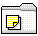

An object template is the primary user mechanism for creating new instances of objects. Specifically, a template is a state of an object where the default Drag operation is Create another, that is, dragging and dropping the template results in the creation of an instance of the object. The visual representation of a template is the object's icon on top of a "yellow sticky pad" with the top sheet slightly peeled up, as shown in the following figure: 
Any object that supports the Create another item can be changed by the user to and from a template state by selecting the template checkbox on the General page in the object's Settings notebook. A template is created automatically when a class is registered, unless the class wpclsQueryStyle returns CLSSTYLE_NEVERTEMPLATE.
When the operating system is first installed, template objects reside in the templates folder on the desktop. The templates folder always contains a template object for each class of object installed on the system that supports the Create another item. Any new object registered by WinRegisterObjectClass that supports the Create another item automatically appears in this folder. A template for each object class registered using this function cannot be removed from the templates folder.